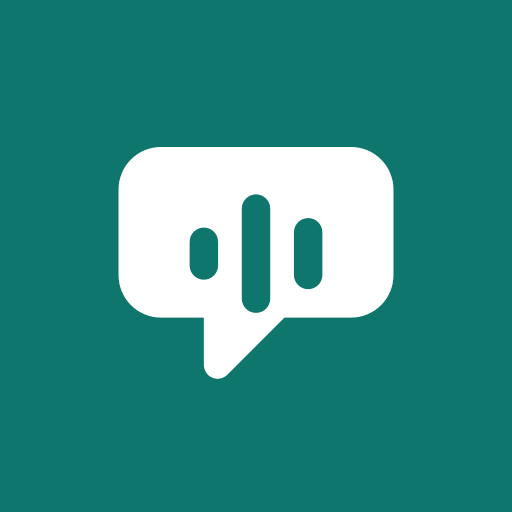
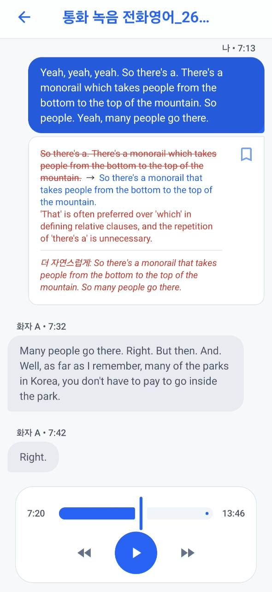
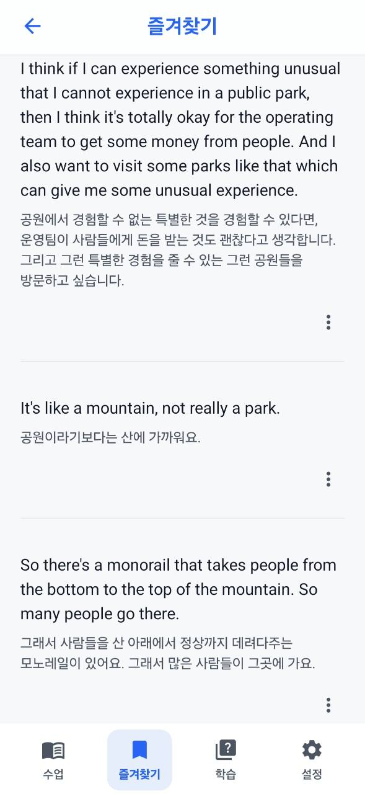
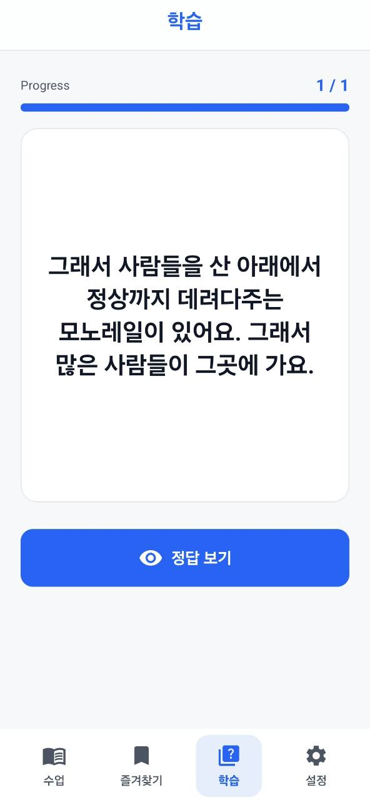
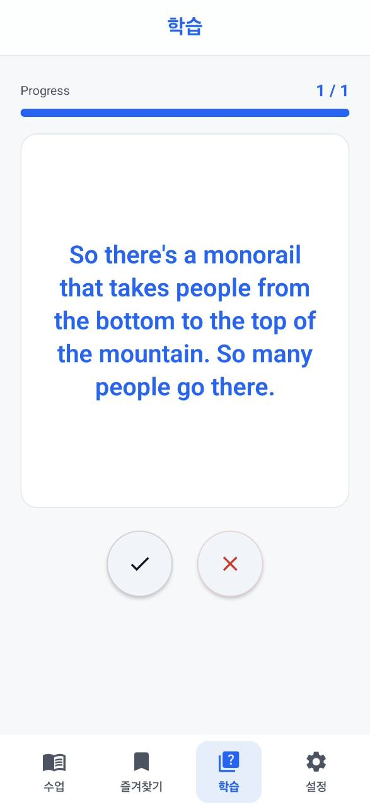
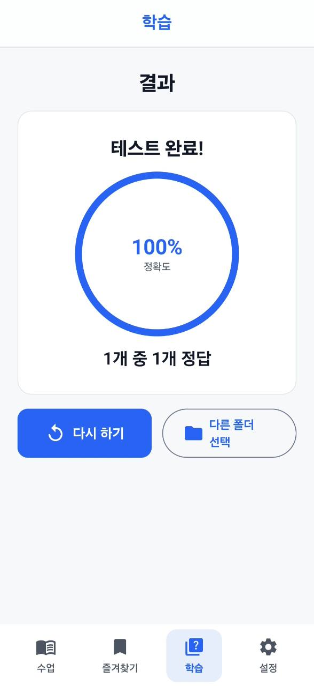

회사 지원 수업
전화영어 녹음만 쌓이는 직장인
정해진 시간 안에 대답하다 보면 혼자 연습할 때보다 문장이 쉽게 무너집니다. 그 실전 문장을 다시 확인하세요.

내폰안의 영어쌤혼자 연습한 영어보다, 실전에서 말한 영어가 더 중요합니다
혼자 방에서 말할 때와 실제 통화, 수업, 회의에서 말할 때의 영어는 다릅니다. 내폰안의 영어쌤은 시간 압박 속에서 내가 실제로 만든 문장을 찾아 문법, 표현, 더 자연스러운 말하기를 정리해줍니다.

이런 사람에게 필요합니다
정해진 시간 안에 대답하다 보면 혼자 연습할 때보다 문장이 쉽게 무너집니다. 그 실전 문장을 다시 확인하세요.
회의나 고객 통화에서는 멈춰서 생각하기 어렵습니다. 실제로 말한 표현이 자연스러웠는지 통화 후 확인할 수 있습니다.
긴장한 상태에서 나온 답변을 분석해 자주 흔들리는 문장 구조와 더 좋은 표현을 빠르게 정리할 수 있습니다.
수업 중에는 대화가 지나가 버립니다. 녹음을 문장별 피드백 노트로 바꿔 놓친 표현을 다시 볼 수 있습니다.
무엇이 달라지나요?
새 대화를 앱 안에서 다시 시작하지 않아도 됩니다. 이미 하고 있는 전화영어, 화상수업, 업무 통화의 녹음을 올리면 실제 상황에서 내가 완성한 문장 전체를 AI가 다시 읽고 고쳐줍니다.
수업이나 회의처럼 여러 사람이 말한 파일에서도 내가 실제로 말한 부분만 골라 분석합니다.
짧게 끊긴 문장, 급하게 만든 문장, 어색한 표현을 대화 흐름 안에서 확인합니다.
실제 대화에서 반복되는 실수 구조를 모아 다음 수업이나 통화 전에 빠르게 복습합니다.
실전에서 다시 쓰고 싶은 수정 문장과 자연스러운 표현을 내 표현집으로 모읍니다.
사용 방법
영어 수업 녹음뿐 아니라 스터디, 업무 통화, 친구와의 대화처럼 실제 상황에서 말한 파일을 학습 자료로 바꿔줍니다.
오디오나 비디오 파일을 올리면 대화가 텍스트로 변환됩니다.
여러 화자가 있어도 내가 말한 목소리만 선택해 분석합니다.
문법 수정, 더 자연스러운 표현, 반복 실수 패턴을 확인합니다.
학습 화면 미리보기




개인 학습을 위한 관리
계정별 데이터 분리 Google 로그인 계정별로 수업과 피드백을 관리합니다.
삭제 가능 앱에서 lesson을 삭제하면 관련 피드백도 함께 정리됩니다.
투명한 안내 개인정보처리방침과 계정 삭제 안내를 앱과 웹에서 확인할 수 있습니다.